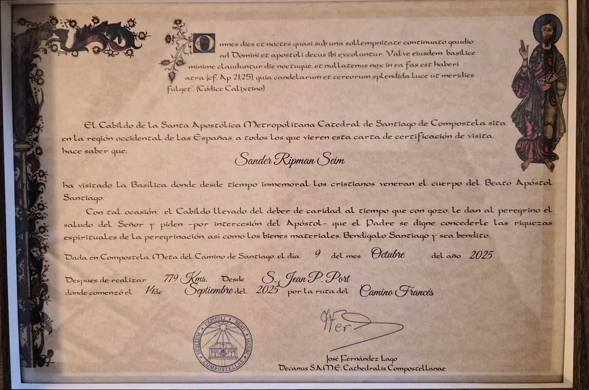

Milepæl, ikke fasitMilestone, not proof
Compostela
Diplomet kan være en sterk markør på at en lang oppgave er gjennomført. Men det er ikke bevis på behandlingseffekt – og papiret er ikke målet.The certificate can mark the completion of a long task. But it is not proof of treatment effect – and the paper is not the goal.
«Santiago er stedet der erfaringen får et ansvar.»“Santiago is where the experience is given a responsibility.”